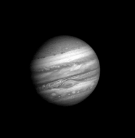

Giusto per citare una frase celebre della saga di "Ritorno al Futuro", Giove è il quinto pianeta del sistema solare
in ordine di distanza dal Sole ed il più grande di tutto il sistema planetario: la sua massa corrisponde a 2,468
volte la somma di quelle di tutti gli altri pianeti messi insieme. È classificato, al pari di Saturno, Urano e
Nettuno, come gigante gassoso.
 Giove ha una composizione simile a quella del Sole: infatti è costituito principalmente da idrogeno ed elio con
piccole quantità di altri composti, quali ammoniaca, metano ed acqua. Si ritiene che il pianeta possegga una
struttura pluristratificata, con un nucleo solido, presumibilmente di natura rocciosa e costituito da carbonio e
silicati di ferro, sopra il quale gravano un mantello di idrogeno metallico ed una vasta copertura atmosferica che
esercitano su di esso altissime pressioni.
L'atmosfera esterna è caratterizzata da numerose bande e zone di tonalità variabili dal color crema al marrone,
costellate da formazioni cicloniche ed anticicloniche, tra le quali spicca la Grande Macchia Rossa. La rapida
rotazione del pianeta gli conferisce l'aspetto di uno sferoide schiacciato ai poli e genera un intenso campo
magnetico che dà origine ad un'estesa magnetosfera; inoltre, a causa del meccanismo di Kelvin-Helmholtz, Giove (come
tutti gli altri giganti gassosi) emette una quantità di energia superiore a quella che riceve dal Sole.
A causa delle sue dimensioni e della composizione simile a quella solare, Giove è stato considerato per lungo tempo
una "stella fallita": in realtà solamente se avesse avuto l'opportunità di accrescere la propria massa sino a 75-80
volte quella attuale, il suo nucleo avrebbe ospitato le condizioni di temperatura e pressione favorevoli all'innesco
delle reazioni di fusione dell'idrogeno in elio, il che avrebbe reso il sistema solare un sistema stellare binario.
Giove ha una composizione simile a quella del Sole: infatti è costituito principalmente da idrogeno ed elio con
piccole quantità di altri composti, quali ammoniaca, metano ed acqua. Si ritiene che il pianeta possegga una
struttura pluristratificata, con un nucleo solido, presumibilmente di natura rocciosa e costituito da carbonio e
silicati di ferro, sopra il quale gravano un mantello di idrogeno metallico ed una vasta copertura atmosferica che
esercitano su di esso altissime pressioni.
L'atmosfera esterna è caratterizzata da numerose bande e zone di tonalità variabili dal color crema al marrone,
costellate da formazioni cicloniche ed anticicloniche, tra le quali spicca la Grande Macchia Rossa. La rapida
rotazione del pianeta gli conferisce l'aspetto di uno sferoide schiacciato ai poli e genera un intenso campo
magnetico che dà origine ad un'estesa magnetosfera; inoltre, a causa del meccanismo di Kelvin-Helmholtz, Giove (come
tutti gli altri giganti gassosi) emette una quantità di energia superiore a quella che riceve dal Sole.
A causa delle sue dimensioni e della composizione simile a quella solare, Giove è stato considerato per lungo tempo
una "stella fallita": in realtà solamente se avesse avuto l'opportunità di accrescere la propria massa sino a 75-80
volte quella attuale, il suo nucleo avrebbe ospitato le condizioni di temperatura e pressione favorevoli all'innesco
delle reazioni di fusione dell'idrogeno in elio, il che avrebbe reso il sistema solare un sistema stellare binario.
L'atmosfera di Giove è la più estesa atmosfera planetaria del sistema solare; manca di un netto confine inferiore, ma gradualmente transisce negli strati interni del pianeta. Dal più basso al più alto, gli stati dell'atmosfera sono: troposfera, stratosfera, termosfera ed esosfera; ogni strato è caratterizzato da un gradiente di temperatura specifico. Al confine tra la troposfera e la stratosfera, ovvero la tropopausa, è collocato un sistema complicato di nubi e foschie costituito da stratificazioni di ammoniaca, idrosolfuro di ammonio ed acqua.  La copertura nuvolosa di Giove è spessa circa 50 km e consiste almeno di due strati di nubi di ammoniaca: uno strato inferiore piuttosto denso ed una regione superiore più rarefatta. I sistemi nuvolosi sono organizzati in fasce orizzontali lungo le diverse latitudini. Si suddividono in zone, di tonalità chiara, e bande, le quali appaiono scure per via della presenza su di esse di una minore copertura nuvolosa rispetto alle zone. La loro interazione dà luogo a violente tempeste, i cui venti raggiungono, come nel caso delle correnti a getto delle zone, velocità superiori ai 100-120 m/s (360-400 km/h). Le osservazioni del pianeta hanno mostrato che tali formazioni variano nel tempo in spessore, colore e attività, ma mantengono comunque una certa stabilità, in virtù della quale gli astronomi le considerano delle strutture permanenti e hanno deciso di assegnare loro una nomenclatura.[25] Le bande sono inoltre occasionalmente interessate da fenomeni, noti come disturbi, che ne frammentano il decorso; uno di questi fenomeni interessa a intervalli irregolari di 3-15 anni la banda equatoriale meridionale (South Equatorial Belt, SEB), la quale improvvisamente "scompare", dal momento che vira sul colore bianco rendendosi indistinguibile dalle chiare zone circostanti, per poi tornare otticamente individuabile nel giro di alcune settimane o mesi. La causa dei disturbi è attribuita alla momentanea sovrapposizione con le bande interessate di alcuni strati nuvolosi posti ad una quota maggiore. La caratteristica colorazione marrone-arancio delle nubi gioviane è causata da composti chimici complessi, noti come cromofori, che emettono luce in questo colore quando sono esposti alla radiazione ultravioletta solare. L'esatta composizione di queste sostanze rimane incerta, ma si ritiene che vi siano discrete quantità di fosforo, zolfo ed idrocarburi complessi; questi composti colorati si mescolano con lo strato di nubi più profondo e più caldo. Il caratteristico bandeggio si forma a causa della convezione atmosferica: nelle zone si ha l'emergere in superficie delle celle convettive dell'atmosfera inferiore, che determina la cristallizzazione dell'ammoniaca che di conseguenza cela alla vista gli strati immediatamente sottostanti; nelle bande invece il movimento convettivo è discendente ed avviene in regioni a temperatura più alte. È stata ipotizzata la presenza di un sottile strato di vapore acqueo al di sotto delle nubi di ammoniaca, come dimostrerebbero i fulmini registrati dalla sonda Galileo, che raggiungono intensità anche decine di migliaia di volte superiori a quelle dei fulmini terrestri: la molecola dell'acqua, essendo polare, è infatti capace di assumere una parziale carica in grado di creare la differenza di potenziale necessaria per generare la scarica. Le nubi d'acqua, grazie all'apporto del calore interno del pianeta, possono quindi formare dei complessi temporaleschi simili a quelli terrestri.
© Copyright "Astronomy", 2018